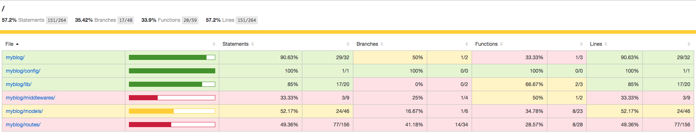

4.14.1 mocha 和 supertest
mocha 和 suptertest 是常用的测试组合，通常用来测试 restful 的 api 接口，这里我们也可以用来测试我们的博客应用。在 myblog 下新建 test 文件夹存放测试文件，以注册为例讲解 mocha 和 supertest 的用法。首先安装所需模块：
npm i mocha supertest --save
修改 package.json，将：
package.json
"scripts": {
"test": "echo \"Error: no test specified\" && exit 1"
}
修改为：
"scripts": {
"test": "mocha --harmony test"
}
指定执行 test 目录的测试。修改 index.js，将：
index.js
// 监听端口，启动程序
app.listen(config.port, function () {
console.log(`${pkg.name} listening on port ${config.port}`);
});
修改为:
if (module.parent) {
module.exports = app;
} else {
// 监听端口，启动程序
app.listen(config.port, function () {
console.log(`${pkg.name} listening on port ${config.port}`);
});
}
这样做可以实现：直接启动 index.js 则会监听端口启动程序，如果 index.js 被 require 了，则导出 app，通常用于测试。
找一张图片用于测试上传头像，放到 test 目录下，如 avatar.png。新建 test/signup.js，添加如下测试代码：
test/signup.js
var path = require('path');
var assert = require('assert');
var request = require('supertest');
var app = require('../index');
var User = require('../lib/mongo').User;
describe('signup', function() {
describe('POST /signup', function() {
var agent = request.agent(app);//persist cookie when redirect
beforeEach(function (done) {
// 创建一个用户
User.create({
name: 'aaa',
password: '123456',
avatar: '',
gender: 'x',
bio: ''
})
.exec()
.then(function () {
done();
})
.catch(done);
});
afterEach(function (done) {
// 清空 users 表
User.remove({})
.exec()
.then(function () {
done();
})
.catch(done);
});
// 名户名错误的情况
it('wrong name', function(done) {
agent
.post('/signup')
.type('form')
.attach('avatar', path.join(__dirname, 'avatar.png'))
.field({ name: '' })
.redirects()
.end(function(err, res) {
if (err) return done(err);
assert(res.text.match(/名字请限制在 1-10 个字符/));
done();
});
});
// 性别错误的情况
it('wrong gender', function(done) {
agent
.post('/signup')
.type('form')
.attach('avatar', path.join(__dirname, 'avatar.png'))
.field({ name: 'nswbmw', gender: 'a' })
.redirects()
.end(function(err, res) {
if (err) return done(err);
assert(res.text.match(/性别只能是 m、f 或 x/));
done();
});
});
// 其余的参数测试自行补充
// 用户名被占用的情况
it(‘duplicate name', function(done) {
agent
.post('/signup')
.type('form')
.attach('avatar', path.join(__dirname, 'avatar.png'))
.field({ name: 'aaa', gender: 'm', bio: 'noder', password: '123456', repassword: '123456' })
.redirects()
.end(function(err, res) {
if (err) return done(err);
assert(res.text.match(/用户名已被占用/));
done();
});
});
// 注册成功的情况
it('success', function(done) {
agent
.post('/signup')
.type('form')
.attach('avatar', path.join(__dirname, 'avatar.png'))
.field({ name: 'nswbmw', gender: 'm', bio: 'noder', password: '123456', repassword: '123456' })
.redirects()
.end(function(err, res) {
if (err) return done(err);
assert(res.text.match(/注册成功/));
done();
});
});
});
});
运行 npm test 看看效果吧，其余的测试请读者自行完成。
4.14.2 测试覆盖率
我们写测试肯定想覆盖所有的情况（包括各种出错的情况及正确时的情况），但光靠想需要写哪些测试是不行的，总也会有疏漏，最简单的办法就是可以直观的看出测试是否覆盖了所有的代码，这就是测试覆盖率，即被测试覆盖到的代码行数占总代码行数的比例。
注意：即使测试覆盖率达到 100% 也不能说明你的测试覆盖了所有的情况，只能说明基本覆盖了所有的情况。
istanbul 是一个常用的生成测试覆盖率的库，它会将测试的结果报告生成 html 页面，并放到项目根目录的 coverage 目录下。首先安装 istanbul:
npm i istanbul --save-dev
配置 istanbul 很简单，将 package.json 中：
package.json
"scripts": {
"test": "mocha --harmony test"
}
修改为：
"scripts": {
"test": "node --harmony ./node_modules/.bin/istanbul cover ./node_modules/.bin/_mocha"
}
注意：如果 Windows 下报错，尝试修改为：
"scripts": { "test": "node --harmony ./node_modules/istanbul/lib/cli.js cover ./node_modules/mocha/bin/_mocha" }见 #201.
即可将 mocha 和 istanbul 结合使用，终端会打印：

打开 myblog/coverage/Icov-report/index.html，如下所示：

可以点进去查看某个代码文件具体的覆盖率，如下所示：

红色的行表示测试没有覆盖到，因为我们只写了 name 和 gender 的测试。
上一节：4.13 日志
下一节：4.15 部署